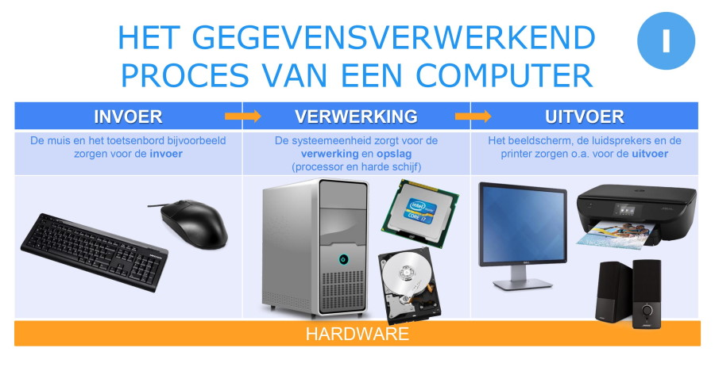
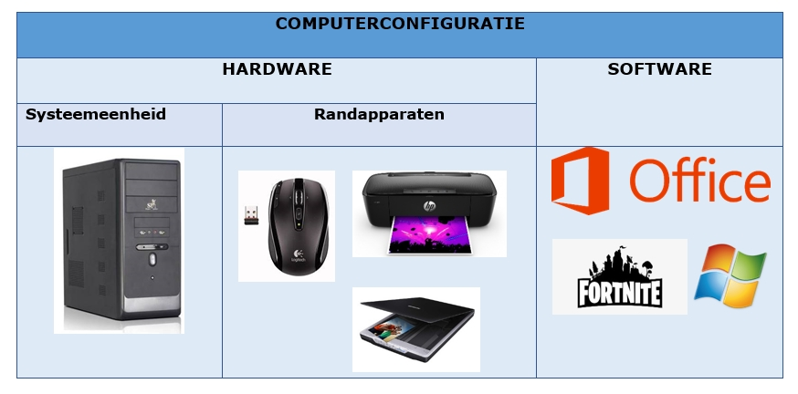

Invoer(input)
Computergegevensinvoer is het proces waarbij gebruikers gegevens en opdrachten aan een computer verstrekken via invoerapparaten. Een van de meest voorkomende invoerapparaten is het toetsenbord.
Wanneer u gegevens wilt invoeren met een toetsenbord, drukt u op de toetsen, die elk een unieke letter, cijfer, symbool of functie vertegenwoordigen. Het toetsenbord is aangesloten op de computer via een kabel of draadloze verbinding. Wanneer u een toets indrukt, wordt er een elektrisch contact gemaakt, wat resulteert in een elektrisch signaal dat naar de computer wordt verzonden.
computer heeft specifieke software, bekend als een toetsenborddriver, die dit signaal interpreteert en omzet in tekst of opdrachten op het computerscherm. De driver houdt rekening met de taal- en toetsenbordindeling die is ingesteld op de computer, zodat de juiste tekens worden weergegeven.
invoer kan ook afkomstig zijn van andere apparaten, zoals een muis, aanraakscherm, pen, spraakherkenning, enz. Elke invoerbron heeft zijn eigen mechanisme om gegevens naar de computer te verzenden, maar het algemene proces van gegevensinvoer omvat altijd het vertalen van fysieke acties of signalen naar begrijpelijke informatie voor de computer.
dit proces van gegevensinvoer vormt de basis voor het interactieproces tussen de gebruiker en de computer, waardoor de gebruiker tekst kan typen, bestanden kan maken, opdrachten kan geven en tal van andere taken kan uitvoeren met behulp van de computer.

Verwerking (Processing)
De kern van verwerking is de CPU (Central Processing Unit), die fungeert als het "brein" van de computer. De CPU haalt continu instructies op uit het geheugen en voert deze uit. Deze instructies worden meestal opgeslagen in programma's en kunnen variëren van eenvoudige berekeningen tot complexe taken.
Tijdens het verwerken worden gegevens in registers en RAM (Random Access Memory) tijdelijk opgeslagen, zodat de CPU er snel toegang toe heeft. De CPU voert verschillende bewerkingen uit, zoals wiskundige berekeningen, logische beslissingen en gegevensmanipulatie, volgens de instructies in het programma.
Parallelle verwerking is ook mogelijk, waarbij meerdere kernen op moderne CPU's gelijktijdig aan verschillende taken werken. Dit verhoogt de verwerkingscapaciteit van de computer.
Het resultaat van de verwerking wordt vervolgens uitgevoerd als informatie. Dit kan worden weergegeven op het computerscherm, afgedrukt op papier of opgeslagen in permanente opslagapparaten. Computers kunnen zeer snel en nauwkeurig verwerken, waardoor ze nuttig zijn voor taken variërend van tekstverwerking en wiskundige berekeningen tot complexe taken zoals grafische rendering, wetenschappelijke simulaties en kunstmatige intelligentie.
Kortom, verwerking op computers is het hart van hun functionaliteit, waar gegevens worden omgezet in zinvolle output door de CPU en andere componenten van het systeem. Het vormt de basis voor de veelzijdigheid en kracht van moderne computers.
Uitvoer(Output)
Uitvoer op een computer is het stadium waarin de verwerkte gegevens, die zijn omgezet in informatie, zichtbaar of hoorbaar worden voor de gebruiker. Dit wordt mogelijk gemaakt door diverse uitvoerapparaten en methoden.
(monitors): Het meest gebruikelijke uitvoerapparaat is een beeldscherm of monitor. Het toont tekst, afbeeldingen, video's en andere visuele informatie op het scherm. Moderne beeldschermen variëren van standaard monitoren tot geavanceerde, hoogwaardige beeldschermen met hoge resolutie en kleurdiepte.
Printer: Printers worden gebruikt om digitale informatie om te zetten in fysieke afdrukken op papier of andere media. Er zijn verschillende soorten printers, zoals inkjetprinters, laserprinters en dot-matrixprinters, elk met hun eigen toepassingen.
Luidsprekers en geluidskaarten: Deze uitvoerapparaten genereren geluid op basis van digitale gegevens, waardoor geluidseffecten, muziek of gesproken woord hoorbaar worden.
Haptische apparaten: Sommige systemen gebruiken haptische feedback, zoals trillingen in smartphones en gamecontrollers, om tastbare feedback te geven aan de gebruiker.
Bestanden en rapporten: De computer kan gegevens opslaan in bestanden of rapporten, die later door de gebruiker kunnen worden bekeken of afgedrukt.
Netwerkcommunicatie: Uitvoer kan ook worden gedeeld via netwerken, zodat anderen toegang hebben tot informatie of resultaten.
Het uitvoerproces wordt gecontroleerd door de software en het besturingssysteem van de computer, waarbij gegevens naar de juiste uitvoerapparaten worden gestuurd op basis van de instructies van de gebruiker. Dit resulteert uiteindelijk in zichtbare of hoorbare informatie die de gebruiker kan begrijpen en gebruiken. Het proces van uitvoer is essentieel voor het maken van de resultaten van computerverwerking toegankelijk en bruikbaar voor menselijke interactie.

Opslaan(Storage)
Opslagmedia: Gegevens worden opgeslagen op verschillende soorten opslagmedia, waaronder harde schijven (HDD's), solid-state drives (SSD's), optische schijven (zoals dvd's en cd's), USB-flashstations en netwerkopslagapparaten. Elk van deze media heeft zijn eigen opslagcapaciteit, snelheid en duurzaamheid.
Bestandssystemen: Bestandssystemen zijn softwarematige structuren die bepalen hoe gegevens worden georganiseerd en opgeslagen op een opslagmedium. Ze helpen bij het beheren van bestanden en mappen, waarbij elk bestand wordt geïdentificeerd door een unieke naam en locatie.
Gegevensopslag: Wanneer gegevens worden gemaakt of geïmporteerd, worden ze opgeslagen in bestanden die worden geschreven naar specifieke locaties op het opslagmedium. Dit gebeurt in binair formaat, waarbij nullen en enen worden gebruikt om gegevens te coderen.
Toegang en herstel: Wanneer een gebruiker gegevens wil openen, wordt het besturingssysteem gebruikt om het opslagmedium te doorzoeken en het benodigde bestand op te halen. Het besturingssysteem coördineert de lees- en schrijfprocessen naar de opslagmedia.
Back-ups: Om gegevensverlies te voorkomen, worden back-ups gemaakt. Dit omvat het kopiëren van gegevens naar een ander opslagmedium, meestal extern, zoals een externe harde schijf of cloudopslag. Back-ups dienen als herstelpunt in geval van gegevensverlies of beschadiging.
Beveiliging: Gegevensopslag omvat ook beveiligingsmaatregelen zoals versleuteling en wachtwoordbescherming om te voorkomen dat onbevoegde personen toegang tot de gegevens krijgen.
Het proces van opslag op een computer stelt gebruikers in staat om gegevens op een gestructureerde manier te bewaren en op te halen. Het is van cruciaal belang voor het functioneren van moderne digitale systemen, waardoor gebruikers bestanden, programma's en andere gegevens kunnen beheren, bewaren en herstellen.
conclusie
Invoer, verwerking, uitvoer en opslag vormen de kern van informatieverwerking in computersystemen. Invoerapparaten zoals toetsenborden en muizen verzamelen gegevens, die vervolgens worden verwerkt door de computer via de CPU. Tijdens verwerking worden deze gegevens omgezet in bruikbare informatie, die zichtbaar wordt gemaakt voor gebruikers via uitvoerapparaten zoals beeldschermen en printers. De resulterende informatie kan worden opgeslagen in verschillende vormen op diverse opslagmedia, waardoor toegang tot gegevens op een later tijdstip mogelijk is. Samen vormen deze vier processen de basis voor alle computeractiviteiten en maken ze de moderne digitale wereld mogelijk, waarbij informatie wordt vastgelegd, verwerkt, weergegeven en bewaard.